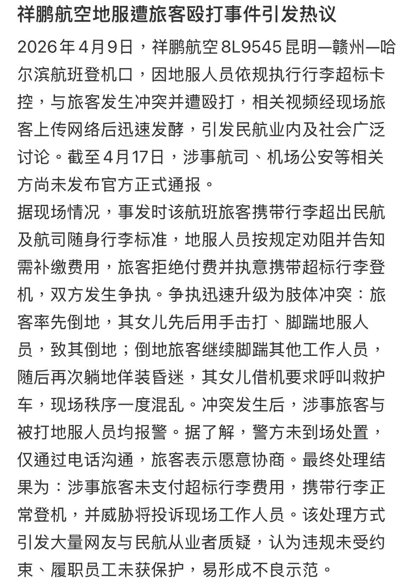

Minokakay
@Minokakay
服务业已经卑微到了什么程度
消费者已经得寸进尺，巨婴到了什么程度
买机票不看有没有行李额，到登机口才知道没有行李额，也不愿意付费，把航司的地服人员打一顿，强行把行李带上飞机，警察在那和稀泥。
如果不处理闹事的人，以后很多人就开始有样学样，直接开始打服务业者来解决问题。

Minokakay
@Minokakay
所以一有人说消费者权益还不够多我就觉得搞笑，老中已经是全世界对消费者最偏心的国家了，倒是对卖家基本没有任何保护。说白了国内的常识就是服务业者要给大爷客户舔屁眼